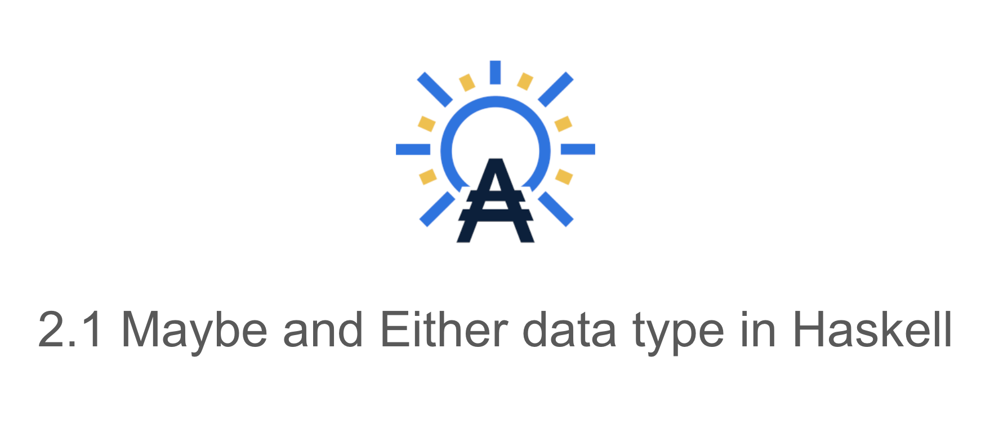

(Vi) 2.1 Maybe, Either data type

Maybe data type

Maybe data type được đinh nghĩa như bên dưới
Prelude> :info Maybe
type Maybe :: * -> *
data Maybe a = Nothing | Just a
-- Defined in ‘GHC.Maybe’
instance Applicative Maybe -- Defined in ‘GHC.Base’
instance Eq a => Eq (Maybe a) -- Defined in ‘GHC.Maybe’
instance Functor Maybe -- Defined in ‘GHC.Base’
instance Monad Maybe -- Defined in ‘GHC.Base’
instance Semigroup a => Monoid (Maybe a) -- Defined in ‘GHC.Base’
instance Ord a => Ord (Maybe a) -- Defined in ‘GHC.Maybe’
instance Semigroup a => Semigroup (Maybe a)
-- Defined in ‘GHC.Base’
instance Show a => Show (Maybe a) -- Defined in ‘GHC.Show’
instance MonadFail Maybe -- Defined in ‘Control.Monad.Fail’
instance Read a => Read (Maybe a) -- Defined in ‘GHC.Read’
instance Foldable Maybe -- Defined in ‘Data.Foldable’
instance Traversable Maybe -- Defined in ‘Data.Traversable’Maybe data type được dùng khi chúng ta muốn break/thoát hay tạm dừng ra khỏi 1 context/ compuation nào đó và trả về Nothing thay vì error hay 1 exception nào đó.
Hãy xét hàm lấy phần tử của list theo index từ ghc được định nghĩa thế nào nhé (link github ghc)
#if defined(USE_REPORT_PRELUDE)
(!!) :: [a] -> Int -> a
xs !! n | n < 0 = errorWithoutStackTrace "Prelude.!!: negative index"
[] !! _ = errorWithoutStackTrace "Prelude.!!: index too large"
(x:_) !! 0 = x
(_:xs) !! n = xs !! (n-1)
-- Prelude version is without HasCallStack to avoid building linear one
#else
(!!) :: HasCallStack => [a] -> Int -> aChúng ta thấy là type trả về ko đồng nhất lắm, như vậy nếu nói haskell là ngôn ngữ trong sáng, thuần khiết(the most purity language), strong type language, hay ko có side effect (thế nào là side effect thì mình sẽ nói thêm các bài viết sắp tới nếu các bạn chưa biết) … là chém gió 😂.
Vì hàm errorWithoutStackTrace trả về data type a nào đó, cụ thể ở đây là anything (bất kỳ kiểu gì). Điều này đi ngược lại với sự chặt chẽ và tính thuần khiết (purity) của Haskell.
errorWithoutStackTrace :: forall (r :: RuntimeRep). forall (a :: TYPE r).
[Char] -> a
errorWithoutStackTrace s = raise# (errorCallException s)
Để Haskell ngày càng hoàn thiện và bám sát triết lý chặt chẽ, trong sáng khi code, thì đã có merge request để cải tiến hàm (!!) ở đây(tại thời điểm bài viết được viết)
--
-- >>> [2,3,4] !? 1
-- Just 3
-- >>> [2,3,4] !? (-1)
-- Nothing
-- >>> [] !? 0
-- Nothing
--
(!?) :: [a] -> Int -> Maybe a
{-# INLINABLE (!?) #-}
xs !? n
| n < 0 = Nothing
| otherwise = foldr (
\x r k ->
case k of
0 -> Just x
_ -> r (k-1)) (const Nothing) xs nChúng ta hãy xét thêm một ví dụ nữa về phép chia 2 số, với trường hợp số bị chia là 0
safeDiv
:: Integral a
=> a
-> a
-> Maybe a
safeDiv a b
| b == 0 = Nothing
| otherwise = Just $ a `div` bTuy nhiên, thay vì trả về Nothing, nếu chúng ta muốn trả về lỗi cụ thể nào đó, tường minh hơn thì sao nhỉ? hãy xét data type Either bên dưới
Either data type

Either data type được định nghĩa như sau:
Prelude> :i Either
type Either :: * -> * -> *
data Either a b = Left a | Right b
-- Defined in ‘Data.Either’
instance Applicative (Either e) -- Defined in ‘Data.Either’
instance (Eq a, Eq b) => Eq (Either a b)
-- Defined in ‘Data.Either’
instance Functor (Either a) -- Defined in ‘Data.Either’
instance Monad (Either e) -- Defined in ‘Data.Either’
instance (Ord a, Ord b) => Ord (Either a b)
-- Defined in ‘Data.Either’
instance Semigroup (Either a b) -- Defined in ‘Data.Either’
instance (Show a, Show b) => Show (Either a b)
-- Defined in ‘Data.Either’
instance (Read a, Read b) => Read (Either a b)
-- Defined in ‘Data.Either’
instance Foldable (Either a) -- Defined in ‘Data.Foldable’
instance Traversable (Either a) -- Defined in ‘Data.Traversable’Với data type Either, Khi xử lý thành công thì chúng ta trả về Right b, ngược lại, nếu bị lỗi, chúng ta sẽ trả về giá trị Left a.
Ở đây, Right b hay Left a là data constructor của type constructor Either a b (link bài giảng về haskell data declaration)
Sau đây là hàm safeDiv' dùng Either data type, để xử lý trường hợp số bị chia bằng 0
safeDiv'
:: Integral a
=> a
-> a
-> Either String a
safeDiv' a b
| b == 0 = Left "can't divide by zero"
| otherwise = Right $ a `div` bBằng cách dùng Either data type chúng ta tường minh chỉ ra lỗi khi chia cho 0, và đồng nhất data type trả về là Either.
Chúng ta xét thêm một ví dụ cụ thể nữa ở đây:
Dùng cách này thì chúng ta thấy được vấn đề là chúng ta chỉ trả về được Nothing chung chung khi có lỗi, mà không tường minh chỉ ra được cụ thể lỗi là gì. Cụ thể là các hàm getName, getAge, getAddress được gọi trong hàm getUserInfo.
-- ...
-- ...
-- some func(s) defined above this
getUserInfo :: IO (Maybe UserInfo)
getUserInfo = do -- IO
name <- getName -- name:: Maybe String
case name of
Nothing -> return Nothing
Just name' -> do
age <- getAge -- age:: Maybe Int
case age of
Nothing -> return Nothing
Just age' -> do
address <- getAddress
case address of
Nothing -> return Nothing
Just address' -> return $ Just $ UserInfo name' age' address' -- IO Maybe UserInfo
main :: IO ()
main = do
userInfo <- getUserInfo -- IO Maybe UserInfo
-- ^ :: Maybe UserInfo
case userInfo of
Nothing -> print "no valid info"
Just uI -> print uIĐể hiểu rõ hơn đoạn code trên, bạn có thể xem thêm ở đây
-- ...
-- ...
-- some func(s) defined above this
getUserInfo :: IO (Either Error UserInfo)
getUserInfo = do
name <- getName -- Either Error UserInfo
case name of
Left err -> return $ Left err
Right name' -> do
age <- getAge
case age of
Left err -> return $ Left err
Right age' -> do
address <- getAddress
case address of
Left err -> return $ Left err
Right address' -> return $ Right $ UserInfo name' age' address'
improvedMain1 :: IO ()
improvedMain1 = do
userInfo <- getUserInfo
-- in this improved version we want to print out what is exactly error
case userInfo of
Left err -> print err
Right uI -> print uIĐể hiểu rõ hơn bạn có thể xem full code ở đây
Kết bài
Với Maybe và Either chúng ta thấy được sự thuần khiết (purity) khi lập trình với Haskell. Và tính hữu ích của Maybe và Either cho từng context hay computation.
Tham khảo
Hình mình hoạ tham khảo từ 2 bài viết bên dưới:
- http://blog.ezyang.com/2010/12/hussling-haskell-types-into-hasse-diagrams/
- https://reddspark.blog/haskell-programming-daily-quiz/